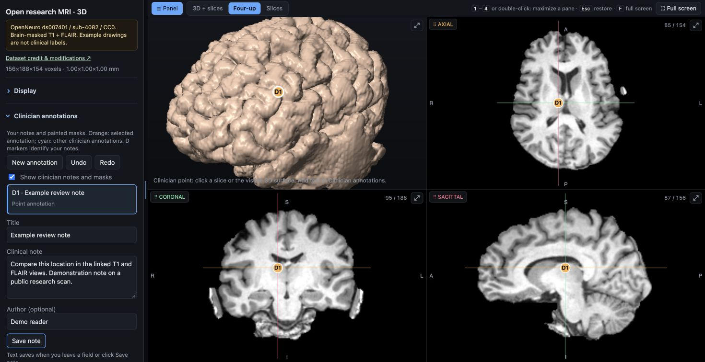
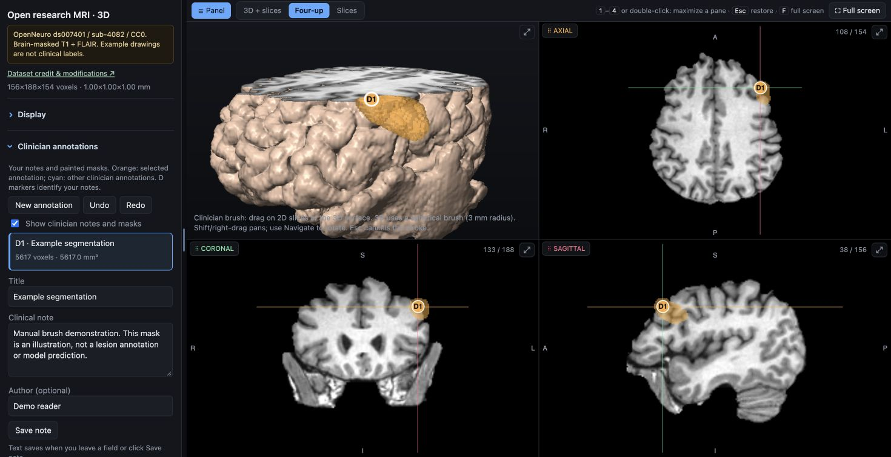
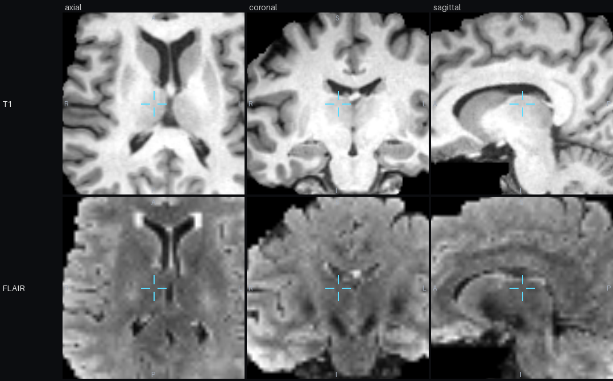

Start with a checked brain MRI export. Build the viewer, connect the tools and evaluate optional AI review in your own environment.
RESEARCH PILOT · APPLICATION CODE UNDER MIT
Prepare a completed study, deliver the browser viewer and configure optional model access. This guide describes the available components and the integration work required.
01 / ARCHITECTURE
Architecture and processing components
The institution prepares images on a workstation. A recipient opens the resulting self-contained HTML in a current browser. Local AI inference and the MCP service are separate workstation processes.
Layer
Available today
Runs on
Browser viewer
Linked 2D/3D views, measurements, notes, masks and saved AI traces
Modern Mac/Windows/Linux browser with WebGL2 and DecompressionStream
Preparation
DICOM extraction / NIfTI import, brain analysis, HTML build
Python 3.10+ scientific stack; exercised on macOS
MCP
16 tools over stdio, per analyzed study
Workstation plus a compatible vision/tool-capable model client
MedGemma
Optional local sampled-image review
Selected model runtime; bundled review CLI has specific backend requirements
Export watcher
Serial jobs, SQLite state, warnings and human review
Local processing workstation with the bundled review backend
Institutional portal
Authentication, controlled sharing and patient access
Your existing systems / integration
No viewer installation is required for a recipient. Python and the optional model runtime do require installation on the processing workstation. Test the browser capabilities and your managed desktops before delivery.
Open http://127.0.0.1:8080/demo/. The bundled demo uses brain-masked T1 and FLAIR images from the CC0 OpenNeuro ds007401 dataset. Try measurements, notes, segmentation and JSON export. See its provenance and rebuild instructions.
Windows preparation has not been verified here against institutional acquisitions. The included review CLI and integrated watcher have additional backend prerequisites documented in the repository hardware guide. Check your dependency and DICOM protocol support.
Pin the repository commit and record pip freeze for your pilot. A viewer demo is a usability check, not a clinical evaluation.
03 / IMAGE PREPARATION
Prepare a brain MRI study
CLASSIC DICOM EXPORT
.venv/bin/mri-preread extract "/path/to/completed-export" data/pilot-study
# Check series.json and correct roles.json before continuing.
.venv/bin/mri-preread analyze data/pilot-study
.venv/bin/mri-preread build data/pilot-study
Keep one patient/study per input. The extractor groups classic DICOM series; compressed syntax decoders are optional dependencies. The watcher rejects enhanced multi-frame MRI. Verify sequence roles — T1, T2, FLAIR, SWI, DWI and ADC — against the actual acquisition, then inspect orientation, registration and image coverage.
The build produces data/pilot-study/brain_viewer.html. Statistical maps come from the analysis command, independently of a language model. Role guesses, ADC normalization and registration fallback need visual verification. Retain the original DICOM for authoritative interpretation; the browser uses prepared/downsampled arrays.
Keep the layers distinct. Manual masks are clinician drawings; statistical candidates are intensity comparisons; MedGemma output is generated text. A point or coloured overlay is not automatically a confirmed lesion.
04 / IMAGE DELIVERY
Deliver through an institutional portal
Host the prepared HTML through your authenticated patient or clinician portal, or use an institution-approved sharing route. No Python server is needed to open that file. Set Content-Type: text/html; charset=utf-8; a gzip upload also needs Content-Encoding: gzip.
The current viewer embeds scripts and data images. Check your portal Content Security Policy; use a controlled route or adapt its script hashes/nonces without relaxing the whole portal policy. Authentication and authorization must cover both the page and underlying object storage.
The file contains the scan. It may contain identifiable facial anatomy, metadata, notes and model reports. Public demonstrations must use synthetic images or explicitly reviewed, redistribution-permitted public research data with documented provenance. Our demo uses the latter. A static link alone is not access control, and recipients can retain downloaded copies.

A written demonstration note stays linked to its reference-grid location.
Where a doctor's notes live
Clinician notes and masks save in IndexedDB in that browser, bound to the scan's reference content and affine. Export JSON to share or back up; import adds annotations to the same scan. These drafts do not synchronize across doctors, write back to PACS or establish authenticated authorship. An institutional record workflow needs central storage, identity, sign-off and audit integration.

Actual manual 3D brush drawing; the orange region is an example, not a lesion label.
Mask JSON uses lossless reference-grid voxel runs with an affine. It is not DICOM SEG/SR or a NIfTI export. Any clinical conversion needs explicit source-geometry mapping and verification.
05 / MCP
MCP tool configuration
Copy .mcp.json.example into the config location used by your MCP client and replace the executable/study paths. The client spawns one stdio process for one analyzed study.
Start with get_study_overview, then view_overview, view_region and region_stats. A model can compare mirrored evidence, move viewer focus or write MCP annotations. rebuild_standalone_viewer embeds those MCP annotations for later delivery.
The live viewer helper runs at http://127.0.0.1:8765/ while the stdio process is alive. For separate studies, use separate processes and set BRAIN_VIEWER_PORT to avoid listener collisions. This helper has no remote authentication or multi-tenant API. Keep it local.
MCP is the interface; the client supplies the model. Use a vision-capable, tool-capable model/client and inspect its handling of image results. A cloud provider receives any images supplied to it. The local MedGemma runner uses MCP tools in a fixed read-only workflow, without a cloud client or unrestricted generated tool execution.

Actual view_region response: the same location, three planes, two sequences. The MCP client supplies these image results to its chosen model.Official MCP documentation ↗
06 / MODEL RUNTIMES
Model and runtime requirements
The viewer and MCP tools are independent of a particular inference device. Connect a compatible model through an MCP client or agent that can call tools and pass image results to a vision model. A model endpoint alone is not an MCP client. Text-only models can use metadata and statistics but cannot inspect MRI pixels.
NVIDIA / model servers
Use a compatible vision model endpoint served by Transformers, vLLM or another supported runtime. Your MCP client bridges tool results to that endpoint. Plan GPU memory and concurrency for the specific model and image workload.
llama.cpp / local computers
Use a supported multimodal GGUF model together with its matching vision projector. llama.cpp can serve image requests on supported CPU/GPU backends; an MCP client provides the tool connection.
EXAMPLE · COMPATIBLE MULTIMODAL LLAMA.CPP MODEL
llama-server -m /path/to/compatible-vision-model.gguf \
--mmproj /path/to/matching-vision-projector.gguf \
--host 127.0.0.1 --port 8082
# Configure your MCP-capable client to use this local model endpoint
# and the mri-preread stdio server from section 05.
Check the model format, vision encoder, runtime version and image handling together. These are external model-host integration paths, not newly implemented backends for the bundled mri-preread medgemma command.
MedGemma as a medical research model
MedGemma 1.5 4B is one multimodal option. It runs outside the browser, on hardware supported by the chosen runtime. Other compatible local or cloud models can use the same MCP tools. The repository also provides a fixed sampled-image MedGemma runner, with its installation, tested backend and reproducibility record described in the README and hardware guide.
That runner samples axial planes, renders aligned sequence images, and saves exact-input PNG hashes, prompts, responses, timing and model provenance. It does not produce automatic segmentation or inspect every voxel of the volume. Switching runtime or quantization requires a new evaluation.
Small devices need model-specific verification. Raspberry Pi 5 is a possible host for compatible runtimes, subject to memory and latency. The original AI HAT+ targets vision workloads; AI HAT+ 2 supports selected compiled generative models. MedGemma 4B support on that accelerator has not been verified here. Check the Hailo supported-model list before choosing hardware.
Your existing scanner/PACS workflow supplies completed folders. A DICOM C-STORE receiver or DICOMweb client is not included. Write a .ready marker last, after every DICOM file has been written and closed. A folder that stops growing does not prove completeness.
INBOX CONTRACT
incoming-dicom/
study-opaque-id/
series-a/...
series-b/...
roles.json # optional verified extracted-series mapping
.ready # created LAST by the export integration
The integrated watcher uses the same extraction, analysis, viewer build and local MedGemma pipeline. Configure the bundled model backend according to the README first; select non-nested inbox/workspace paths writable on your processing workstation.
Open http://127.0.0.1:8800/. The watcher checks study consistency, snapshots original DICOM, keeps durable job states, records failures and preserves technical warnings. It processes by receipt, and human review controls urgency. To use another inference runtime in the automatic queue, implement a worker adapter and evaluate its outputs. Viewer-only automation can call extract, analyze and build directly; the integrated watcher always invokes MedGemma.
08 / CAPACITY
Processing capacity and concurrency
A thousand DICOM images may be a few studies or many. Measure complete-export-to-viewer and complete-export-to-draft latency on representative protocols, not only model token generation. Record study dimensions, sequence count, sampled planes, memory/disk peaks, failures and recovery behavior.
The current watcher is single-worker and serial, and model weights load in each review process. Scaling requires an external durable queue, isolated study workspaces/workers, accelerator allocation, monitoring and backpressure. Viewer delivery can be decoupled from AI jobs. These are engineering extensions, not existing production controls.
Keep a pinned release and pilot environment record. An external NVIDIA or llama.cpp endpoint can be used by a compatible MCP client. Extending the included automatic-review worker to use that endpoint requires a separate inference adapter and evaluation.
09 / PILOT EVALUATION
Pilot evaluation and clinical boundaries
Current MedGemma result: failure to discriminate.
The initial six-case pilot selected yes on all 91 sampled planes: 18 lesion-bearing planes, 44 other planes in labelled cases and 29 control planes. Some decisions contradicted their explanations. No clinical urgency is assigned.
The repository includes a separate small point-based MCP feasibility benchmark and reproducible scoring scripts. Its findings cannot be transferred to this MedGemma configuration. Ten-millimetre sampling, small lesions, limited conditions and site variation remain key limits. The public MRI demo illustrates usability and does not provide lesion ground truth or measure accuracy.
Technical pilot: verify geometry, transfer syntaxes, sequence roles, image quality, measurement behavior and recovery using your protocols.
Retrospective evaluation: freeze predictions before expert reference access. Measure localization, missed lesions, false findings and exclusions across representative studies.
Reader assessment: test whether evidence-linked drafts and notes help clinicians, including time cost and misleading outputs.
AI shadow mode: keep the existing clinical queue and decisions authoritative. Have the institution evaluate intended use and operational/regulatory requirements before changing care.
Neither the application nor these research results establish a certified clinical product, reliable diagnosis or validated triage.
10 / SCOPE
Supported anatomy and integration gaps
The current asymmetry map mirrors the brain, aligns the hemispheres and compares local sequence intensities. Normal variation, artifacts and registration errors can create hotspots. Symmetric or diffuse changes may not be highlighted. Other anatomy needs a suitable mask, symmetry model and independent evaluation; do not apply the existing brain pipeline as a general MRI detector.
No enhanced multi-frame MRI support in the watcher.
No included PACS networking, DICOMweb, FHIR/HL7 write-back or DICOM SEG/SR export.
No institution SSO, patient identity reconciliation, multi-tenancy or centralized clinician record.
No validated diagnosis, urgency detector or high-volume performance guarantee.
The bundled automatic review runner has a specific backend; other model hosts connect through an external MCP client or a new worker adapter.
Use the integration boundaries to scope a pilot and choose the parts you can adopt first. Contributions for tested adapters, data interoperability and model evaluation are welcome.
PUBLIC MRI / PROVENANCE
Public MRI provenance
The public demonstration, feature illustrations and MCP montage use T1w and FLAIR from OpenNeuro ds007401, IDEAS II, subject sub-4082, session 1. The publisher metadata specifies CC0. No private scan is used in these research assets. We selected two sequences, aligned and resampled them, removed outside-brain voxels and prepared browser display arrays. Brain masking is a display modification, not a general anonymization guarantee.
The four feature screenshots show actual viewer operations on this study. Written notes, rulers, ROIs and painted masks are demonstration actions, not expert lesion labels or AI findings. The MCP montage is an actual view_region response. No model prediction is embedded.
Image sources, authors, licensing and derivative records are listed in license.txt.
Credit does not imply dataset-author endorsement. Original NIfTIs stay outside the source and website packages. To reproduce the public viewer after installing the project:
PINNED PUBLIC INPUTS · ABOUT 8 MB DOWNLOAD
.venv/bin/python examples/build_public_demo.py --download
# Verifies publisher SHA-256 keys before importing and preparing the scan.
# Rebuild invalidates the derivative manifest; review and reseal as documented.
See docs/open-demo.md in the source for full reproduction and screenshot capture instructions. Keep synthetic fixtures for regression tests; the public demo builder does not accept arbitrary private studies.
Implementation and upstream sources reviewed 2 October 2026. See the repository README, hospital integration guide, hardware guide and contributor reference for details.